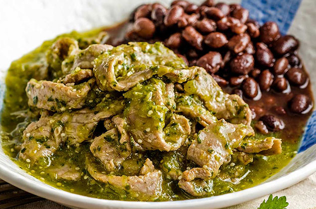

<ion-content>
  <ion-card>
    <ion-card-content>
      <div class="superior">
        <ion-icon name="arrow-back-outline" class="back" (click)="back()"></ion-icon>
        <div (click)="nueva_comida()">
          <ion-icon name="add-circle-outline" class="mas"></ion-icon>
        </div>
      </div>

      <h4 class="titulo">Comidas disponibles</h4>

      <div *ngFor="let food of comidas">
        <ion-grid id="comidad{{food.id}}">
          <ion-row>
            <ion-col size="3" class="comida">
              <ion-item>
                <ion-checkbox color="primary" value="food.id" (ionChange)="verifyEvent(food.id)"></ion-checkbox>
              </ion-item>
            </ion-col>
            <ion-col size="6" class="comida">Bistec en salsa verde</ion-col>
            <ion-col size="3"></ion-col>
          </ion-row>
        </ion-grid>
      </div>

      <section>
        <ion-button expand="block" (click)="agregar_menu()">Agregar a menu</ion-button>
      </section>

    </ion-card-content>
  </ion-card>
</ion-content>
